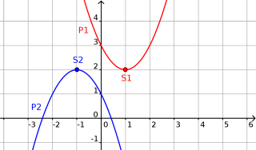

Propriété 1 :
Soit $f(x)=ax^2+bx+c$.
La courbe de $f$ est une parabole :
- dirigée vers le haut si $a>0$ ;
- dirigée vers le bas si $a<0$.
Exemple 1 :
$f_1(x)=x^2-2x+3$ ;
$f_2(x)=-x^2-2x+1$.

Propriété 2 :
Soit $f(x)=ax^2+bx+c$.
Le sommet de la parabole est
$S(\alpha;\beta)$ avec $\alpha = -\frac{b}{2a}$
et $\beta = f(\alpha)$.